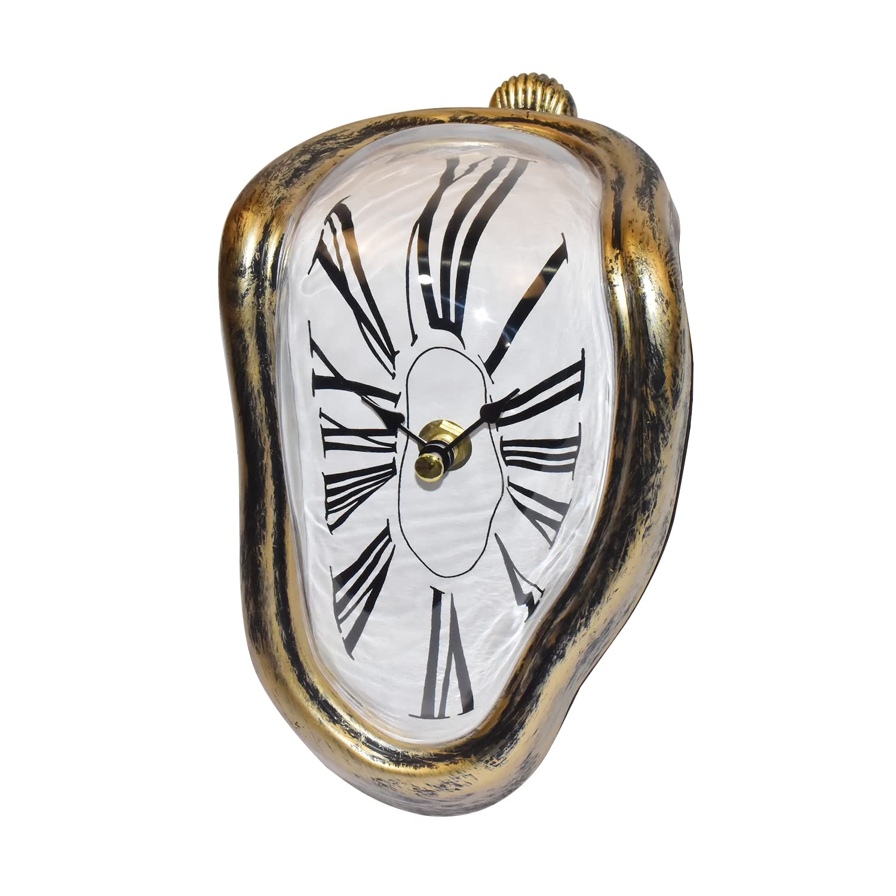
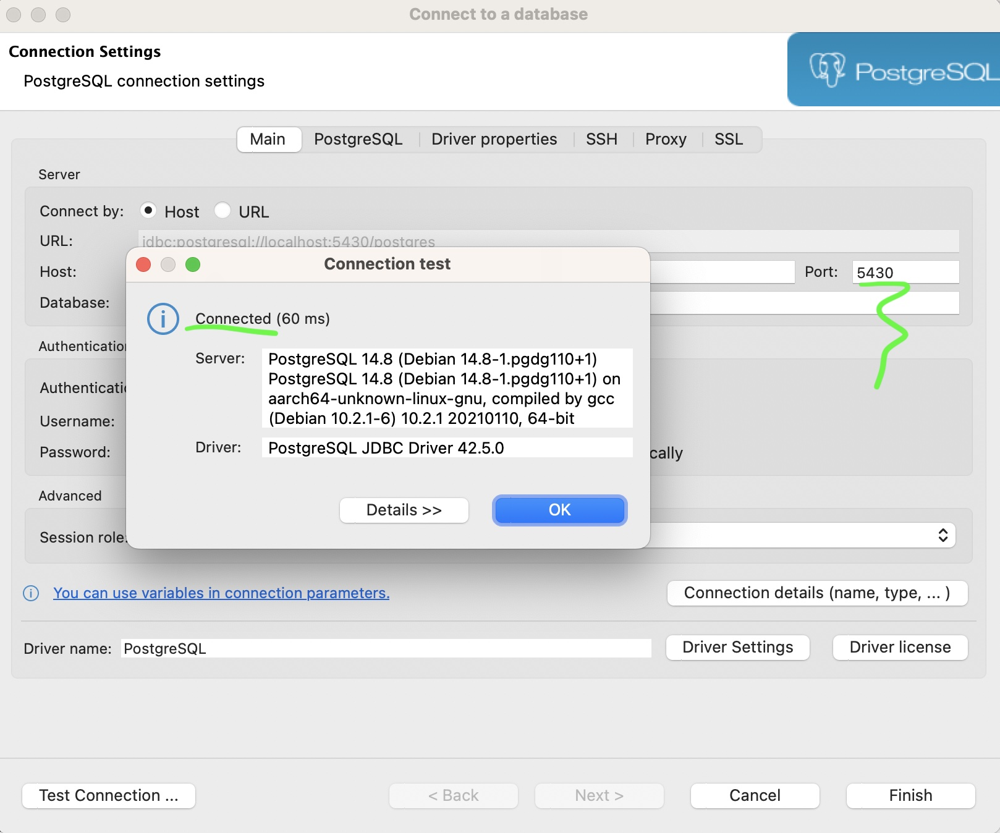
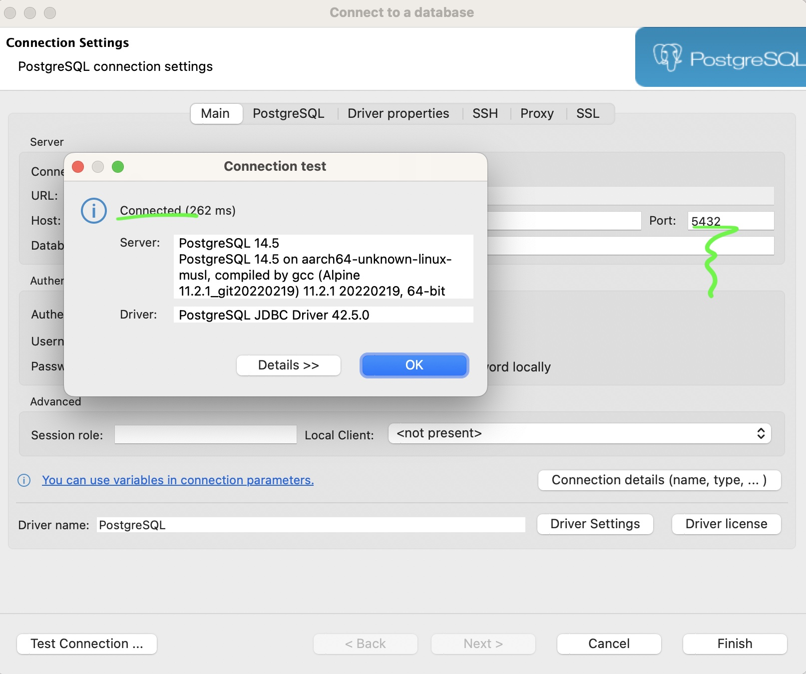

No começo

- existia a máquina
- compilava local
- instalava
Confiável?
Faz-me rir
Rise of distros
apt-get install xpto zyx- dependente de distro
- "funciona na minha máquina"
Instalando tudo
- java
- redis
- postgres
- extensões nativas
Dependências
- daemons
- postgres
- redis
- sidekiq
- execs
- cronjobs
- onetime/perdidas
- libs
- adicionam poder a execs/daemons
- plugins
Por que alternativa?
Grátis para uso PESSOAL
Por que docker?
- na real: container
- docker: container feito com sucesso
- container: alegria de usar deps
Por que container?
VM
- VM é mais pesado
- disco, memória, processamento
- outro SO levantado
Por que container?
Container
- mantém a kernel (não é outro SO INTEIRINHO)
- leve para levantar
- roda como processo
- CLI fofa =3
Brincando de docker
Bora testar mudar o banco?
- autal: app X, postgres 14.5-alpine
- desejo: app X, postgres 15
- app X: rodando local, eg IDE
- testar em paralelo?
1º terminal
docker run -e 'POSTGRES_PASSWORD=my-secret-pw' --rm \ -p 5430:5432 postgres:15
2º terminal
docker run -e 'POSTGRES_PASSWORD=my-secret-pw' --rm \ -p 5432:5432 postgres:14-alpine

- subir instância do app X, apontando localhost:5432
- subir instância do app X, apontando localhost:5430
- testar em paralelo e ser feliz 😁
Explicando o comando
- criou uma instância nova
docker run ... postgres:15
- passou uma variável de ambiente
-e 'POSTGRES_PASSWORD=my-secret-pw'
Explicando o comando
- mapeou porta
-p 5430:5432
- antes do
:=> porta da máquina depois do
:=> porta do programa- o postgres acha que está escutando a 5432
Ciclo de vida?
docker run ... # inicia um novo container docker run --rm ... # igual mas se auto remove docker start ... # acorda um container parado docker stop ... # para um container docker create ... # cria um novo container parado docker remove ... # remove o container
Precisa inspecionar algo dentro do container?
docker exec -it <container> <comando> [args do comando...]
Por que o postgres rodou em primeiro plano?
- Porque não era um daemon
docker run -d ...
Como fazer o container "persistir"?
- compartilha uma pasta
docker run -v <dir-na-minha-máquina>:<dir-no-docker>
- precisa ser caminho absoluto
Posso testar uma aplicação?
YEP!!!
Como subir um ambiente?
- bash hell? 🤪
O que é docker compose?
- descrição de um ambiente
- serviços + apps
- exemplo: server + maria db + ngingx
Compose
construindo app